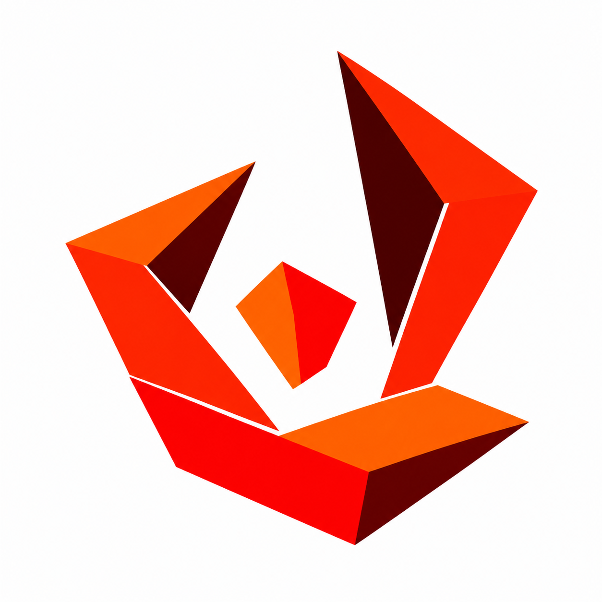

AEssentialStudy A
Faithful
Original gesture, fewer folds
Keeps the tall right wing and lower supporting fold. Secondary shards are removed and the center becomes a simple two-face polygon.
Connection to Rewards
The enclosing planes pull away to reveal a distinct center: the same opening and discovery idea as Unfold.
32 px
48 px
96 px
80 px
Closest to the selected artwork. The separated folds keep a sculptural quality, with more space between the major pieces.
Open full sketch ↗